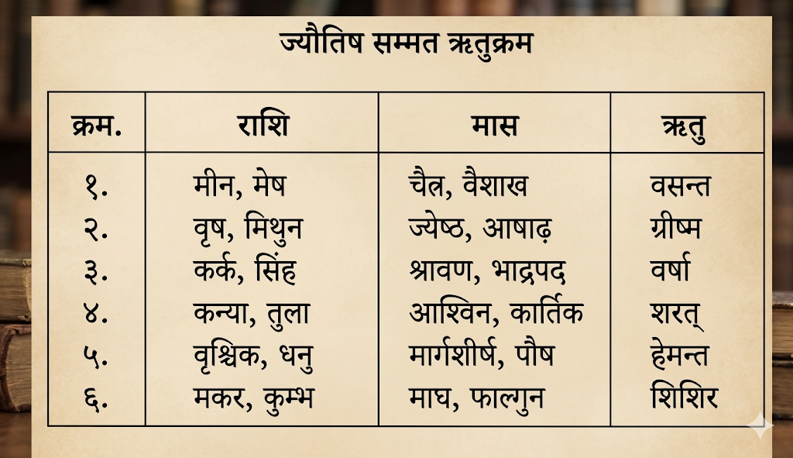
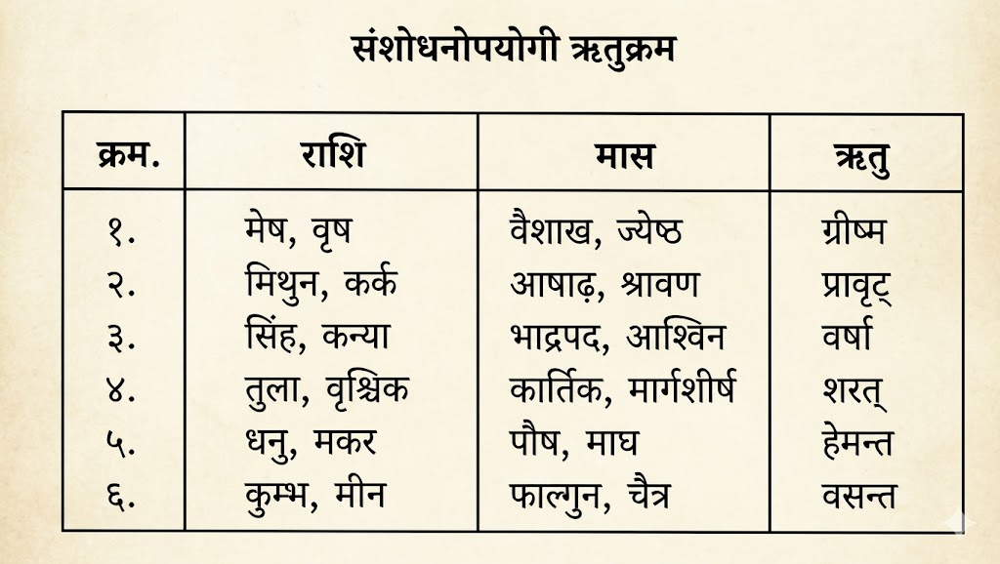
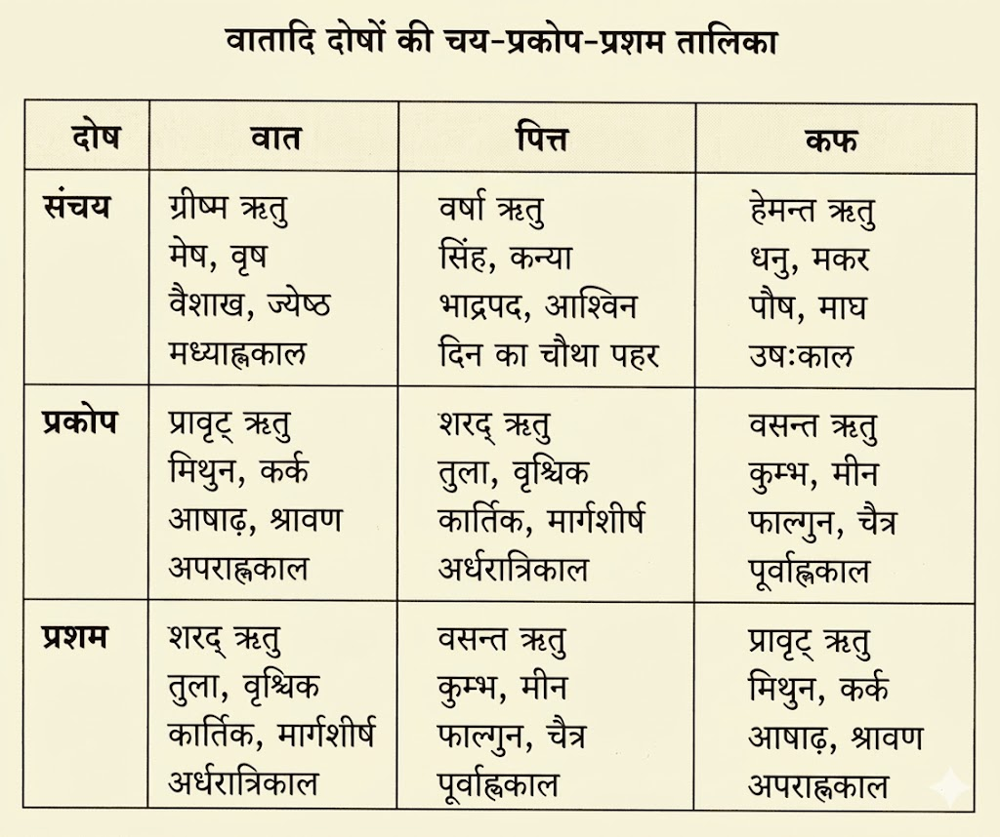

अब हम ऋतुचर्या अध्याय की व्याख्या करेंगे — ऐसा आत्रेय आदि महर्षियों ने कहा।
👉 इस श्लोक में आचार्य वाग्भट्ट ऋतुचर्या अध्याय का आरम्भ कर रहे हैं। “ऋतुचर्या” का अर्थ है — विभिन्न ऋतुओं के अनुसार आहार, विहार और दिनचर्या का पालन।
👉 आयुर्वेद के अनुसार शरीर और प्रकृति में निरन्तर परिवर्तन होता रहता है। प्रत्येक ऋतु में वातावरण, ताप, आर्द्रता, वायु तथा सूर्य के प्रभाव बदलते हैं, जिनका सीधा प्रभाव दोषों (वात, पित्त, कफ) पर पड़ता है।
👉 यदि मनुष्य ऋतु के अनुसार उचित आहार-विहार अपनाता है, तो दोष संतुलित रहते हैं और स्वास्थ्य सुरक्षित रहता है। विपरीत आचरण करने पर रोग उत्पन्न होते हैं।
👉 “आत्रेयादयो महर्षयः” कहकर यह स्पष्ट किया गया है कि यह ज्ञान प्राचीन महर्षियों की परम्परा से प्राप्त है और प्रमाणभूत है।
👉 आयुर्वेद में “स्वस्थस्य स्वास्थ्य रक्षणम्” को मुख्य उद्देश्य माना गया है। ऋतुचर्या उसी उद्देश्य की पूर्ति का महत्वपूर्ण साधन है।
👉 यह अध्याय केवल ऋतु का वर्णन नहीं करता, बल्कि शरीर और प्रकृति के सामंजस्य का विज्ञान प्रस्तुत करता है।
अब ऋतुचर्या अध्याय का वर्णन किया जाएगा। आत्रेय आदि महर्षियों ने बताया कि ऋतु के अनुसार आहार-विहार बदलने से स्वास्थ्य सुरक्षित रहता है।
माघ आदि महीनों के क्रम से शिशिर, वसन्त, ग्रीष्म, वर्षा, शरद और हेमन्त — ये छह ऋतुएँ मानी गई हैं।
इनमें शिशिर, वसन्त और ग्रीष्म — ये तीन ऋतुएँ उत्तरायण अथवा आदान काल कहलाती हैं। इस समय सूर्य और वायु की तीव्रता मनुष्यों की शक्ति को प्रतिदिन कम करती रहती है।
👉 आचार्य वाग्भट्ट यहाँ वर्ष को छह ऋतुओं में विभाजित करते हैं। प्रत्येक ऋतु दो-दो महीनों की होती है। यह विभाजन केवल कालगणना नहीं, बल्कि शरीर और प्रकृति के परिवर्तन को समझने का आधार है।
👉 शिशिर, वसन्त और ग्रीष्म — इन तीन ऋतुओं को “उत्तरायण” कहा गया है। इस काल में सूर्य उत्तर दिशा की ओर गमन करता हुआ अधिक तीक्ष्ण और उष्ण प्रभाव उत्पन्न करता है।
👉 “आदान” शब्द का अर्थ है — ग्रहण करना या खींच लेना। इस समय सूर्य की प्रखरता तथा वायु की रूक्षता पृथ्वी और शरीर से स्निग्धता तथा बल का हरण करती है।
👉 इसलिए इस काल में शरीर में धीरे-धीरे दुर्बलता आने लगती है। विशेषतः ग्रीष्म ऋतु तक पहुँचते-पहुँचते शरीर का बल न्यूनतम हो जाता है।
👉 आयुर्वेद में ऋतु के अनुसार दोषों, अग्नि और बल की स्थिति बदलती है। अतः आहार-विहार भी उसी अनुसार परिवर्तित करना आवश्यक बताया गया है।
👉 उत्तरायण काल में वातावरण में रूक्षता, लघुता और उष्णता की वृद्धि होती है। इसका प्रभाव शरीर के रसधातु और बल पर पड़ता है।
👉 आदान काल में मधुर, अम्ल और लवण रस अपेक्षाकृत क्षीण होते हैं, जबकि कटु, तिक्त और कषाय रसों का प्रभाव बढ़ता है।
👉 इस काल में अत्यधिक उपवास, श्रम तथा रूक्ष आहार शरीर को और अधिक क्षीण कर सकते हैं।
माघ आदि महीनों से छह ऋतुएँ मानी गई हैं। शिशिर, वसन्त और ग्रीष्म उत्तरायण या आदान काल हैं, जिनमें सूर्य की तीक्ष्णता शरीर का बल धीरे-धीरे कम करती है।
तस्मिन् = उस काल में (आदानकाल में)
हि = क्योंकि
अत्यर्थ = अत्यधिक
तीक्ष्ण = तीखे
उष्ण = गर्म
रूक्षाः = शुष्क
मार्गस्वभावतः = मार्ग (उत्तरायण) के स्वभाव से
आदित्य = सूर्य
पवनाः = वायु
सौम्यान् = चन्द्रमा से उत्पन्न शीतल गुणों को
क्षपयन्ति = नष्ट करते हैं
गुणान् = गुणों को
भुवः = पृथ्वी के
आदानकाल में सूर्य और वायु अपने तीक्ष्ण, उष्ण तथा रूक्ष स्वभाव के कारण पृथ्वी के सौम्य (शीतल, स्निग्ध) गुणों को धीरे-धीरे नष्ट कर देते हैं।
👉 यहाँ आचार्य बताते हैं कि उत्तरायण अथवा आदानकाल में सूर्य की शक्ति अत्यधिक प्रबल हो जाती है। सूर्य अपनी तीक्ष्ण और उष्ण किरणों द्वारा पृथ्वी की आर्द्रता तथा शीतलता को सोख लेता है।
👉 इसी प्रकार वायु भी रूक्षता को बढ़ाती है। वातावरण में नमी कम होने लगती है तथा धरती का सौम्य स्वभाव घटने लगता है।
👉 “सौम्य गुण” से अभिप्राय है — शीत, स्निग्ध, मधुर, पोषक और बलवर्धक गुण। आदानकाल में इनका क्षय होने से जीवों के शरीर में भी रूक्षता और दुर्बलता बढ़ती है।
👉 इसलिए इस काल में शरीर का बल क्रमशः घटता जाता है और वात की वृद्धि की प्रवृत्ति बनने लगती है।
आदानकाल प्रकृति में “शोषण” की प्रक्रिया का समय माना गया है। सूर्य पृथ्वी से जल तथा स्निग्धता को ग्रहण करता है, इसलिए इस काल में शरीर की रक्षा हेतु स्निग्ध, शीतल और पोषक आहार-विहार आवश्यक बताए गए हैं।
• आदानकाल में सूर्य और वायु प्रबल होते हैं।
• पृथ्वी के सौम्य गुणों का क्षय होता है।
• वातावरण में रूक्षता और उष्णता बढ़ती है।
• शरीरबल धीरे-धीरे कम होने लगता है।
आदानकाल में सूर्य और वायु की उष्णता व रूक्षता बढ़ती है, जिससे पृथ्वी के शीतल एवं स्निग्ध गुण नष्ट होते हैं और शरीरबल घटता है।
तिक्तः = कड़वा
कषायः = कसैला
कटुकः = तीखा
बलिनः = बलवान होते हैं
अत्र = इस काल में
रसाः = रस
क्रमात् = क्रम से
तस्मात् = इसलिए
आदानम् = आदानकाल
आग्रेयम् = अग्नि प्रधान
ऋतवः = ऋतुएँ
दक्षिणायनम् = दक्षिणायन
इस आदानकाल में क्रमशः तिक्त, कषाय और कटु रस बलवान हो जाते हैं। इसलिए यह काल अग्नि प्रधान माना जाता है।
👉 आदानकाल में वातावरण की रूक्षता और उष्णता बढ़ने के कारण तिक्त, कषाय और कटु रसों की प्रधानता बढ़ जाती है।
👉 ये तीनों रस स्वभाव से रूक्ष एवं शोषक होते हैं। अतः ये शरीर में भी शुष्कता और दुर्बलता को बढ़ाने वाले माने गए हैं।
👉 “आग्रेय” शब्द से अभिप्राय है — अग्नि या सूर्य के गुणों की प्रधानता। उत्तरायण में अग्नि तत्व की वृद्धि के कारण प्रकृति में उष्णता तथा शोषण अधिक रहता है।
👉 इस समय स्निग्ध, मधुर तथा शीतल पदार्थों का सेवन हितकर माना गया है ताकि शरीर की रक्षा हो सके।
तिक्त, कषाय और कटु रस वातवर्धक माने जाते हैं। इसलिए आदानकाल में अधिक उपवास, अत्यधिक व्यायाम या रूक्ष आहार शरीर को क्षीण कर सकते हैं।
• आदानकाल अग्नि प्रधान होता है।
• तिक्त, कषाय और कटु रसों की वृद्धि होती है।
• ये रस रूक्षता बढ़ाते हैं।
• शरीरबल में कमी आती है।
आदानकाल अग्निप्रधान होता है, जिसमें तिक्त, कषाय और कटु रसों की वृद्धि होकर रूक्षता बढ़ती है।
वर्षादयः = वर्षा आदि ऋतुएँ
विसर्गः = विसर्गकाल
अयम् = यह
विसृजति = छोड़ता है, प्रदान करता है
अयम् = यह काल
सौम्यत्वात् = चन्द्रस्वभाव होने से
अत्र = इसमें
सोमः = चन्द्रमा
हि = निश्चय ही
बलवान् = बलवान होता है
हीयते = कम होता है
रविः = सूर्य
वर्षा आदि ऋतुओं का काल विसर्गकाल कहलाता है। इस समय चन्द्रमा की शक्ति बढ़ती है और सूर्य की तीव्रता कम हो जाती है।
👉 दक्षिणायन को “विसर्गकाल” कहा गया है क्योंकि इस समय प्रकृति जीवों को बल और पोषण प्रदान करती है।
👉 वर्षा, शरद और हेमन्त ऋतु इस काल में आती हैं। सूर्य की तीव्रता कम होने तथा चन्द्रमा के प्रभाव बढ़ने से वातावरण में शीतलता और स्निग्धता बढ़ती है।
👉 “सोम” यहाँ चन्द्रमा तथा शीतल-पोषक शक्ति का प्रतीक है। इस काल में शरीर को पोषण मिलने लगता है और बल की पुनः वृद्धि होती है।
👉 इसलिए विसर्गकाल को आदानकाल की अपेक्षा अधिक बलदायक माना गया है।
आचार्य के अनुसार प्रकृति का यह चक्र शरीर के दोष, बल और अग्नि पर प्रत्यक्ष प्रभाव डालता है। विसर्गकाल में पोषण और स्थिरता की प्रवृत्ति बढ़ती है।
• वर्षा से आरम्भ होने वाला काल विसर्गकाल है।
• चन्द्रमा का प्रभाव बढ़ता है।
• सूर्य की तीव्रता घटती है।
• शरीरबल बढ़ने लगता है।
वर्षा आदि ऋतुएँ विसर्गकाल हैं, जहाँ चन्द्रमा की शक्ति बढ़ती है, सूर्य की तीव्रता घटती है और शरीर को बल प्राप्त होता है।
मेघ = बादल
वृष्टि = वर्षा
अनिलैः = वायु द्वारा
शीतैः = शीतल
शान्ततापे = ताप शांत होने पर
महीतले = पृथ्वी पर
स्निग्धाः = स्निग्ध
च = और
इह = यहाँ (विसर्गकाल में)
अम्ल = खट्टा
लवण = नमकीन
मधुराः = मीठे
बलिनः = बलवान होते हैं
रसाः = रस
जब बादल, वर्षा और शीतल वायु से पृथ्वी का ताप शांत हो जाता है, तब विसर्गकाल में स्निग्ध, अम्ल, लवण और मधुर रस बलवान हो जाते हैं।
👉 विसर्गकाल में वर्षा, बादल और शीतल वायु के कारण पृथ्वी की उष्णता शांत होने लगती है।
👉 वातावरण में स्निग्धता और शीतलता बढ़ती है, जिससे मधुर, अम्ल और लवण रसों की प्रधानता होती है।
👉 ये रस शरीर को पोषण, स्थिरता और बल प्रदान करते हैं। विशेषतः मधुर रस धातुपोषक माना गया है।
👉 इस काल में शरीर का बल क्रमशः बढ़ता है तथा स्निग्ध गुणों की वृद्धि होने से वात का शमन होता है।
विसर्गकाल में प्रकृति पोषणकारी बनती है। इसलिए उचित मात्रा में पौष्टिक एवं स्निग्ध आहार शरीर के लिए अत्यंत हितकारी माना गया है।
• वर्षा और शीतल वायु से पृथ्वी का ताप शांत होता है।
• स्निग्धता बढ़ती है।
• मधुर, अम्ल और लवण रस प्रबल होते हैं।
• शरीर को पोषण और बल प्राप्त होता है।
विसर्गकाल में वर्षा और शीतलता से पृथ्वी स्निग्ध बनती है तथा मधुर, अम्ल और लवण रस बलवर्धक हो जाते हैं।
शीते = शीत ऋतु में
अग्र्य = श्रेष्ठ, अधिक
वृष्टि = वर्षा ऋतु में
घर्मे = ग्रीष्म ऋतु में
अल्पम् = कम
बलम् = शरीरबल
मध्यम् = मध्यम
तु = और
शेषयोः = अन्य ऋतुओं में
हेमन्त-शिशिर ऋतु में शरीर का बल सबसे अधिक होता है। वर्षा और ग्रीष्म ऋतु में बल कम होता है तथा बाकी ऋतुओं में मध्यम रहता है।
👉 आचार्य बताते हैं कि ऋतुओं के अनुसार शरीरबल में परिवर्तन होता रहता है। यह परिवर्तन सूर्य की शक्ति, वात-पित्त-कफ की स्थिति तथा अग्नि की अवस्था पर आधारित है।
👉 शीत ऋतु में बाहरी ठंड के कारण शरीर की उष्णता भीतर संचित रहती है। इससे जठराग्नि प्रबल होती है और शरीरबल बढ़ता है।
👉 ग्रीष्म ऋतु में सूर्य की तीव्रता से शरीर का ओज और शक्ति क्षीण हो जाते हैं। इसी प्रकार वर्षा ऋतु में अग्निमांद्य तथा वातप्रकोप से बल घट जाता है।
👉 वसन्त और शरद ऋतु में बल मध्यम माना गया है क्योंकि इन ऋतुओं में न तो अत्यधिक शीत होता है और न अत्यधिक उष्णता।
ऋतु के अनुसार आहार-विहार बदलना आयुर्वेद का मूल सिद्धांत है। शरीरबल की स्थिति समझकर ही व्यायाम, भोजन और उपचार निर्धारित करने चाहिए।
• शीत ऋतु = अधिक बल
• ग्रीष्म और वर्षा = अल्प बल
• वसन्त और शरद = मध्यम बल
ठंड में बल अधिक, गर्मी-वर्षा में कम, बाकी ऋतुओं में मध्यम।
बलिनः = बलवान व्यक्ति का
शीत-संरोधात् = शीत के अवरोध के कारण
हेमन्ते = हेमन्त ऋतु में
प्रबलः = अत्यन्त प्रबल
अनलः = जठराग्नि
हेमन्त ऋतु में शीत के कारण शरीर की ऊष्मा भीतर रुक जाती है, जिससे जठराग्नि अत्यन्त प्रबल हो जाती है।
👉 बाह्य वातावरण में अत्यधिक शीत होने से शरीर की उष्णता बाहर नहीं निकल पाती। वह भीतर संचित होकर जठराग्नि को तीव्र बनाती है।
👉 इस समय पाचनशक्ति बढ़ जाने से व्यक्ति भारी भोजन भी पचा सकता है। यदि उचित आहार न मिले तो यही अग्नि शरीरधातुओं को जलाने लगती है।
👉 इसलिए हेमन्त ऋतु में पौष्टिक, स्निग्ध और बलवर्धक आहार का सेवन आवश्यक बताया गया है।
यहाँ “अनल” शब्द जठराग्नि के लिए प्रयुक्त हुआ है, जो आयुर्वेद में स्वास्थ्य का मूल आधार माना गया है।
• शीत से अग्नि भीतर संचित होती है।
• हेमन्त में पाचनशक्ति सबसे अधिक रहती है।
हेमन्त में ठंड के कारण जठराग्नि प्रबल हो जाती है।
भवति = होता है
अल्प-इन्धनः = कम ईंधन वाला
धातून् = शरीरधातुओं को
सः = वह अग्नि
पचेत् = पचा दे
वायुना = वायु द्वारा
ईरितः = प्रेरित होकर
अतः = इसलिए
हिमे अस्मिन् = इस शीतकाल में
सेवेत = सेवन करना चाहिए
स्वादु = मधुर
अम्ल = खट्टा
लवणान् = नमकीन
रसान् = रसों का
यदि प्रबल अग्नि को पर्याप्त भोजन न मिले तो वह वायु से प्रेरित होकर शरीरधातुओं को जलाने लगती है। इसलिए शीत ऋतु में मधुर, अम्ल और लवण रस का सेवन करना चाहिए।
👉 हेमन्त ऋतु की तीव्र अग्नि को पर्याप्त आहार चाहिए। यदि भोजन कम लिया जाए तो अग्नि शरीर के धातुओं को ही क्षीण करने लगती है।
👉 इसे अग्नि और ईंधन के उदाहरण से समझाया गया है। जैसे अग्नि को लकड़ी न मिले तो वह उपलब्ध वस्तुओं को जलाती है, वैसे ही जठराग्नि धातुक्षय कर सकती है।
👉 इसलिए इस ऋतु में गुरु, स्निग्ध, पौष्टिक तथा मधुर-अम्ल-लवण रस प्रधान आहार का निर्देश दिया गया है।
मधुर रस धातुपोषक, अम्ल रस अग्निदीपक और लवण रस वातशामक माना गया है; अतः शीत ऋतु में ये विशेष हितकर हैं।
• प्रबल अग्नि को पर्याप्त भोजन चाहिए।
• शीत ऋतु में मधुर, अम्ल और लवण रस हितकारी हैं।
हेमन्त में कम भोजन करने से अग्नि धातुक्षय करती है, इसलिए मधुर-अम्ल-लवण रस लें।
दीर्घ्यात् = लंबी होने से
निशानाम् = रात्रियों के
एतर्हि = इस समय
प्रातर् एव = प्रातःकाल ही
बुभुक्षितः = भूखा हो जाता है
अवश्यकार्य = आवश्यक कार्यों को
सम्भाव्य = पूर्ण करके
यथोक्तम् = बताए अनुसार
शील्येत = आचरण करना चाहिए
अनु = बाद में
हेमन्त ऋतु में रातें लंबी होने के कारण प्रातःकाल ही भूख लग जाती है। इसलिए आवश्यक कार्य करके फिर बताए गए नियमों का पालन करना चाहिए।
👉 लंबी रात्रि के कारण भोजन के पाचन के लिए पर्याप्त समय मिल जाता है, जिससे सुबह तीव्र भूख उत्पन्न होती है।
👉 व्यक्ति को मल-मूत्र त्याग आदि आवश्यक कार्यों के बाद तुरंत उचित आहार-विहार अपनाना चाहिए।
👉 देर तक उपवास या भोजन में विलंब करना इस ऋतु में हानिकारक माना गया है क्योंकि इससे प्रबल अग्नि धातुओं को क्षीण कर सकती है।
आयुर्वेद में “भूख” को अग्नि की स्थिति का प्रमुख संकेत माना गया है। समय पर भोजन करना स्वास्थ्यरक्षा का आधार है।
• हेमन्त में सुबह जल्दी भूख लगती है।
• आवश्यक कार्यों के बाद शीघ्र भोजन करना चाहिए।
हेमन्त में लंबी रात के कारण सुबह जल्दी भूख लगती है।
वातघ्न-तैलैः = वातनाशक तेलों से
अभ्यङ्गम् = शरीर पर तेल मालिश
मूर्ध्नि = सिर में
तथा = तथा
विमर्दनम् = मर्दन, दबाव देना
नियुद्धम् = कुश्ती
कुशलैः सार्धम् = कुशल व्यक्तियों के साथ
पादाघातम् = पैरों से दबाना
च = और
युक्तितः = उचित प्रकार से
हेमन्त ऋतु में वातनाशक तेलों से अभ्यंग, सिर की मालिश, शरीर मर्दन, कुशल व्यक्तियों के साथ कुश्ती तथा उचित प्रकार से पैरों से दबाना करना चाहिए।
👉 शीत ऋतु में वात का संचय होता है, इसलिए स्निग्ध उपायों का विशेष महत्व है।
👉 अभ्यंग शरीर को बल, स्थिरता और त्वचा को स्निग्धता देता है। सिर की मालिश इन्द्रियों को पुष्ट करती है।
👉 व्यायाम एवं कुश्ती से शरीर में उष्णता और बल बढ़ता है। पादाघात अथवा मर्दन से शरीर की जड़ता दूर होती है।
👉 ये सभी उपाय हेमन्त ऋतु में स्वास्थ्यरक्षा और बलवृद्धि के लिए बताए गए हैं।
“वातघ्न तैल” जैसे तिल तैल का प्रयोग विशेष हितकारी माना गया है।
• हेमन्त में अभ्यंग और व्यायाम आवश्यक हैं।
• स्निग्धता और बलवर्धन पर विशेष ध्यान देना चाहिए।
हेमन्त में तेल मालिश, व्यायाम और शरीर मर्दन करना चाहिए।
कषाय-अपहूत-स्नेहः = कषाय द्रव्यों द्वारा अतिरिक्त स्निग्धता हटाकर
ततः = उसके बाद
स्नातः = स्नान किया हुआ
यथाविधि = विधिपूर्वक
कुङ्कुमेन = केसर से
स-दर्पेण = कपूर आदि सुगन्धित द्रव्य सहित
प्रदिग्धः = लेप किया हुआ
अगुरु-धूपितः = अगरु धूप से सुवासित
अभ्यंग के बाद कषाय द्रव्यों से अतिरिक्त तेल हटाकर विधिपूर्वक स्नान करना चाहिए। तत्पश्चात् केसर, कपूर आदि सुगन्धित द्रव्यों का लेप तथा अगरु धूप का उपयोग करना चाहिए।
👉 हेमन्त ऋतु में शरीर में बल और अग्नि दोनों प्रबल होते हैं। इसलिए अभ्यंग, उबटन तथा स्नान का विशेष महत्व बताया गया है।
👉 “कषाय” द्रव्य शरीर पर लगे अतिरिक्त तेल को हटाकर त्वचा को स्वच्छ करते हैं तथा रोमकूपों को खुला रखते हैं।
👉 कुङ्कुम, कपूर और अगरु जैसे द्रव्य केवल सुगन्ध ही नहीं देते, बल्कि शीतहर, मनप्रसादक तथा वात-कफ शमन गुण भी रखते हैं।
शरीर की बाह्य शुद्धि के साथ मानसिक प्रसन्नता और इन्द्रियसंतोष को भी ऋतुचर्या का अंग माना गया है।
हेमन्त ऋतु में अभ्यंग, स्नान, सुगन्धित लेप और धूप शरीर को शीत से रक्षा करते हैं तथा बलवर्धन करते हैं।
अभ्यंग → कषाय उबटन → स्नान → कुङ्कुम लेप → अगरु धूप।
रसान् स्निग्धान् = स्निग्ध रसयुक्त पदार्थ
पलपुष्टम् = मांस से पुष्ट करने वाले आहार
गौडम् = गुड़
अच्छसुराम् सुराम् = निर्मल मद्य
गोधूम-पिष्ट = गेहूँ के पदार्थ
माष = उड़द
इक्षु = गन्ना
क्षीर-उत्थ-विकृतीः = दूध से बने पदार्थ
शुभाः = हितकर
हेमन्त ऋतु में स्निग्ध, पुष्टिकारक आहार, गुड़, मद्य, गेहूँ, उड़द, गन्ना तथा दूध से बने पदार्थों का सेवन हितकर है।
👉 इस ऋतु में जठराग्नि अत्यन्त प्रबल होती है। इसलिए गुरु एवं स्निग्ध पदार्थ भी सुगमता से पच जाते हैं।
👉 गेहूँ, उड़द, क्षीरविकृति, गुड़ आदि बलवर्धक एवं वातशामक माने गए हैं।
👉 शरीर में ऊष्मा और धातुपोषण बनाए रखने हेतु पौष्टिक आहार आवश्यक माना गया है।
यदि इस समय पर्याप्त पौष्टिक आहार न लिया जाए तो प्रबल अग्नि स्वयं धातुओं का क्षय करने लगती है।
हेमन्त ऋतु में बलवर्धक, स्निग्ध और गुरु आहार का सेवन करना चाहिए।
हेमन्त आहार = घृत + गुड़ + गेहूँ + उड़द + दूध पदार्थ।
नवम् अन्नम् = नया अन्न
वसाम् = वसा
तैलम् = तेल
शौचकार्यं = स्वच्छता कार्य
सुखोदकम् = सुखद गर्म जल
प्रावार = ऊनी वस्त्र
अजिन = चमड़े के वस्त्र
कोशेय = रेशमी वस्त्र
प्रवेणी-कोच-वास्तृतम् = बिछौनों आदि से युक्त
नव अन्न, वसा, तेल, उष्ण जल तथा ऊनी, रेशमी और गरम बिछौनों का उपयोग करना चाहिए।
👉 शीत ऋतु में उष्णता संरक्षण अत्यन्त आवश्यक है। इसलिए वस्त्र, बिछौने तथा स्नानादि में उष्णता का ध्यान रखा गया है।
👉 वसा और तैल शरीर को स्निग्धता देकर वात का शमन करते हैं।
बाह्य शीत से रक्षा ही हेमन्तचर्या का मूल उद्देश्य माना गया है।
शीत से रक्षा हेतु उष्ण, स्निग्ध और आवरणयुक्त जीवनचर्या आवश्यक है।
गरम जल + स्निग्धता + ऊनी वस्त्र = हेमन्त सुरक्षा।
उष्णस्वभावैः = गरम स्वभाव वाले
लघुभिः = हल्के वस्त्रों से
प्रावृतः = ढका हुआ
शयनम् भजेत् = शयन करे
युक्त्या = उचित प्रकार से
अर्ककिरणान् = सूर्यकिरण
स्वेदम् = स्वेदन
पादत्राणम् = जूते
उचित गरम वस्त्रों का उपयोग करना चाहिए। आवश्यकतानुसार सूर्यस्नान, स्वेदन तथा जूतों का प्रयोग करना चाहिए।
👉 सूर्यकिरण और स्वेदन शरीर में उष्णता बनाए रखते हैं तथा कफ संचय को रोकते हैं।
👉 पादत्राण धारण करने से शीत का प्रभाव कम होता है।
शरीर को संतुलित उष्णता प्रदान करना वात-कफ नियंत्रण का प्रमुख उपाय है।
शीत ऋतु में शरीर को गरम रखना और शीत संपर्क कम करना चाहिए।
सूर्यस्नान + स्वेदन + पादत्राण = शीतनाश।
पीवर-ऊरु-स्तन-श्रोण्यः = पुष्ट जंघा, स्तन और नितम्ब वाली
समदाः = मदयुक्त
प्रमदाः = स्त्रियाँ
उष्णाङ्ग्यः = गरम शरीर वाली
धूप-कुङ्कुम-योवनैः = धूप, कुङ्कुम और यौवन से
यौवनयुक्त, सुगन्धित तथा उष्ण शरीर वाली प्रिय स्त्रियाँ शीत को दूर करती हैं।
👉 यहाँ मैथुन और स्त्रीसंग को शीतहर एवं सुखप्रद माना गया है।
👉 मानसिक प्रसन्नता तथा शारीरिक उष्णता दोनों का विचार किया गया है।
हेमन्त ऋतु में बल वृद्धि होने से कामशक्ति भी प्रबल मानी गई है।
हेमन्त में नियंत्रित मैथुन एवं मानसिक प्रसन्नता स्वास्थ्यवर्धक मानी गई है।
उष्णता + प्रसन्नता + संयमित मैथुन = शीतहर प्रभाव।
अतिखर-ताप-सन्तप्त = अत्यन्त तीव्र सूर्यताप से तपे हुए
गर्भ-भू-वेश्म-चारिणः = भूमिगत या घर के भीतर रहने वाले
शीत-पारुष्य-जनितः = शीत और रूक्षता से उत्पन्न
दोषः = विकार
जातु = कभी भी
न जायते = उत्पन्न नहीं होता
जो लोग प्रखर सूर्यताप से बचकर घरों या भूमिगत स्थानों में रहते हैं, उन्हें शीत और रूक्षता से उत्पन्न रोग नहीं होते।
👉 ग्रीष्म ऋतु में अत्यधिक सूर्यताप शरीर में रूक्षता और शोष उत्पन्न करता है।
👉 इसलिए शीतल एवं सुरक्षित स्थानों में रहना स्वास्थ्यरक्षण हेतु आवश्यक बताया गया है।
👉 इससे वातदोष की वृद्धि तथा शारीरिक क्षीणता से रक्षा होती है।
ऋतुचर्या में वातावरण के अनुकूल निवास को भी आहार-विहार जितना महत्त्व दिया गया है।
ग्रीष्म में तीव्र सूर्यताप से बचाव तथा शीतल निवास स्वास्थ्यरक्षक है।
सूर्यताप से बचाव + शीतल निवास = वात एवं रूक्षता से रक्षा।
अयम् एव विधिः = यही नियम
कार्यः = करना चाहिए
शिशिरे अपि = शिशिर ऋतु में भी
विशेषतः = विशेष रूप से
तदा हि = क्योंकि उस समय
शीतम् अधिकम् = अधिक ठंड होती है
रौक्ष्यम् च = तथा रूक्षता भी
आदानकालजम् = आदानकाल से उत्पन्न
यही नियम शिशिर ऋतु में विशेष रूप से अपनाना चाहिए, क्योंकि उस समय अत्यधिक शीत और आदानकालजन्य रूक्षता होती है।
👉 शिशिर ऋतु में वातावरण अत्यधिक शीत एवं शुष्क हो जाता है।
👉 आदानकाल में सूर्य की तीक्ष्णता से शरीर की स्निग्धता और बल का ह्रास होने लगता है।
👉 इसलिए उष्ण, स्निग्ध एवं संरक्षणात्मक आचार का पालन आवश्यक बताया गया है।
शिशिर ऋतु को हेमन्त से भी अधिक शीतप्रधान माना गया है।
शिशिर में शीत और रूक्षता से बचने हेतु विशेष सावधानी आवश्यक है।
शिशिर = अधिक शीत + अधिक रूक्षता + संरक्षण की आवश्यकता।
कफः चितः = संचित कफ
हि = निश्चय ही
शिशिरे = शिशिर ऋतु में
वसन्ते = वसन्त ऋतु में
अर्क-अंशु-तापितः = सूर्यकिरणों से पिघला हुआ
हत्वा अग्निम् = जठराग्नि को नष्ट करके
कुरुते रोगान् = रोग उत्पन्न करता है
अतः = इसलिए
तम् = उस कफ को
त्वरया = शीघ्र
जयेत् = जीतना चाहिए
शिशिर में संचित कफ वसन्त ऋतु में सूर्यताप से पिघलकर जठराग्नि को नष्ट करता है और रोग उत्पन्न करता है, इसलिए उसे शीघ्र नष्ट करना चाहिए।
👉 शिशिर ऋतु में कफ का संचय स्वाभाविक रूप से होता है।
👉 वसन्त में सूर्य की उष्णता से यही कफ द्रव होकर शरीर में फैलता है।
👉 इससे अग्निमांद्य, कफज रोग, ज्वर, कास आदि विकार उत्पन्न होते हैं।
👉 अतः वसन्त ऋतु में कफशोधन एवं कफहर आहार-विहार का विशेष निर्देश दिया गया है।
ऋतु परिवर्तन के साथ दोषों की अवस्था भी बदलती है — संचय, प्रकोप और शमन।
वसन्त में कफप्रकोप से बचने हेतु शीघ्र कफहर उपाय आवश्यक हैं।
शिशिर में कफ संचय → वसन्त में प्रकोप → अग्निमांद्य एवं रोग।
तीक्ष्णैः वमन-नस्यैः = तीक्ष्ण वमन और नस्य द्वारा
लघु-रुक्षैः च भोजनैः = हल्के और रूक्ष भोजन से
व्यायाम = व्यायाम द्वारा
उदर्तन = उबटन/मर्दन द्वारा
आघातैः = शारीरिक परिश्रम से
जित्वा = जीतकर
श्लेष्माणम् = कफ को
उल्बणम् = बढ़े हुए
तीक्ष्ण वमन-नस्य, हल्के एवं रूक्ष भोजन, व्यायाम तथा उदर्तन द्वारा बढ़े हुए कफ को जीतना चाहिए।
👉 वसन्त ऋतु में कफ का प्रकोप होने से शोधन चिकित्सा का विशेष महत्त्व है।
👉 वमन और नस्य द्वारा कफ का निष्कासन किया जाता है।
👉 लघु एवं रूक्ष आहार कफ की स्निग्धता और गुरुता को कम करते हैं।
👉 व्यायाम और उदर्तन शरीर की स्थिरता एवं आलस्य को दूर कर कफहर प्रभाव उत्पन्न करते हैं।
वसन्त ऋतु को शोधन कर्मों के लिए श्रेष्ठ काल माना गया है।
वसन्त में कफशोधन एवं रूक्ष-लघु आहार सर्वोत्तम हैं।
वमन + नस्य + व्यायाम + लघु-रुक्ष आहार = कफशमन।
स्नातः = स्नान किया हुआ
अनुलिप्तः = लेप किया हुआ
कर्पूर-चन्दन-अगुरु-कुङ्कुमैः = कपूर, चन्दन, अगुरु और कुङ्कुम से
पुराण-यव-गोधूम = पुराने जौ और गेहूँ
क्षौद्र = मधु
नाङ्कल-शूल्य-भुक् = भुने हुए मांस आदि का सेवन करने वाला
स्नान करके कपूर, चन्दन, अगुरु और कुङ्कुम का लेप करना चाहिए तथा पुराने जौ, गेहूँ, मधु और भुने आहार का सेवन करना चाहिए।
👉 वसन्त ऋतु में सुगन्धित एवं कफहर द्रव्यों का उपयोग हितकर माना गया है।
👉 पुराने धान्य लघु एवं सुपाच्य होते हैं तथा कफ वृद्धि नहीं करते।
👉 मधु को श्रेष्ठ कफहर एवं लेक्हन द्रव्य माना गया है।
👉 शूल्य (भुना हुआ) आहार अपेक्षाकृत रूक्ष होने से कफशमन में सहायक होता है।
वसन्त ऋतु में स्निग्ध, गुरु और नव अन्न के सेवन से बचने का संकेत दिया गया है।
वसन्त में कफहर, लघु और रूक्ष आहार-विहार अपनाना चाहिए।
चन्दन + मधु + पुराने धान्य + रूक्ष आहार = वसन्तचर्या।
सहकार-रस-उन्मिश्रान् = आम्ररस से मिश्रित
आस्वाद्य = स्वादयुक्त
प्रियया-अर्पितान् = प्रिया द्वारा दिए हुए
प्रिय-आस्य-सङ्ख-सुरभीन् = प्रिय स्त्री के मुख की सुगन्ध जैसे
प्रिय-नेत्र-उत्पल-अङ्कितान् = प्रिय के नेत्ररूपी कमलों से युक्त
प्रिय स्त्री द्वारा दिए गए, आम्ररसयुक्त, सुगन्धित एवं मनोहर पेयों का सेवन करना चाहिए।
👉 ग्रीष्म ऋतु में मन को प्रसन्न रखने वाले शीतल, मधुर एवं सुगन्धित पेय हितकर बताए गए हैं।
👉 यहाँ केवल पेय का वर्णन नहीं, बल्कि मानसिक प्रसन्नता और प्रिय संगति का भी महत्व बताया गया है।
ग्रीष्म ऋतु में शरीर एवं मन दोनों शुष्क और क्लान्त हो जाते हैं, इसलिए हर्षदायक वातावरण आवश्यक माना गया है।
ग्रीष्म में शीतल, मधुर, सुगन्धित तथा मनःप्रसादजनक पदार्थ उपयोगी हैं।
प्रिय संग + सुगन्धित शीतल पेय = ग्रीष्म में हितकर।
सौमनस्य-कृतः = मन को प्रसन्न करने वाले
हद्यान् = हृदयप्रिय
वयस्यैः सहितः = मित्रों के साथ
पिबेत् = पिए
निर्गद = विशेष मद्य
आसव-अरिष्ट-सीधु = विभिन्न प्रकार के पेय
अर्क-माधवान् = मधुर पेय
शुद्ध-बेर-अम्बु = स्वच्छ बेरजल
सार-अम्बु = उत्तम जल
मधु-अम्बु = मधु मिश्रित जल
जलद-अम्बु = वर्षाजल
मित्रों के साथ मन और हृदय को प्रसन्न करने वाले पेय तथा शुद्ध जल आदि का सेवन करना चाहिए।
👉 ग्रीष्म में शरीर की दाह एवं क्लान्ति को कम करने हेतु शीतल और हृदयप्रिय पेयों का विधान किया गया है।
👉 आयुर्वेद में मानसिक प्रसन्नता को भी स्वास्थ्यरक्षण का महत्वपूर्ण अंग माना गया है।
अत्यधिक उष्णता से ओज क्षीण होने लगता है, इसलिए स्निग्ध एवं शीतल पेय उपयोगी बताए गए हैं।
ग्रीष्म में शीतल, मधुर एवं हृदयप्रिय पेयों का सेवन स्वास्थ्यकर है।
मित्र + शीतल पेय + मानसिक प्रसन्नता = ग्रीष्मचर्या।
दक्षिण-अनिल-शीतेषु = दक्षिण दिशा से आने वाली शीतल वायु वाले
परितः = चारों ओर
जल-वाहिषु = जलधाराओं से युक्त स्थानों में
शीतल दक्षिणी वायु तथा जलयुक्त स्थानों में रहना चाहिए।
👉 ग्रीष्म ऋतु में शीतल वातावरण शरीर की दाह और थकावट को कम करता है।
👉 जल के समीप तथा शीतल वायु वाले स्थान वात-पित्त शमन में सहायक माने गए हैं।
प्राकृतिक शीतलता को आयुर्वेद में कृत्रिम उपायों से श्रेष्ठ माना गया है।
ग्रीष्म में शीतल एवं जलयुक्त वातावरण हितकर है।
शीतल वायु + जलयुक्त स्थान = ग्रीष्म में राहत।
अदृष्ट-नष्ट-सूर्येषु = जहाँ सूर्य का ताप न हो
मणि-कुट्टिम-कान्तिषु = मणियों से सुशोभित भवनों में
पर-पुष्ट-विघुष्टेषु = कोयल आदि पक्षियों के मधुर स्वरयुक्त
काम-कर्म-अन्त-भूमिषु = रमणीय विश्रामस्थलों में
सूर्यताप से रहित, शीतल एवं रमणीय स्थानों में निवास करना चाहिए।
👉 ग्रीष्म ऋतु में सूर्यताप शरीर को क्षीण करता है, इसलिए शीतल एवं सुखद वातावरण का निर्देश दिया गया है।
👉 मानसिक प्रसन्नता बढ़ाने वाले ध्वनि, सौन्दर्य और विश्रामस्थल भी स्वास्थ्यवर्धक माने गए हैं।
आयुर्वेद में इन्द्रियों को प्रसन्न रखने वाले विषयों को भी स्वास्थ्यरक्षण का अंग माना गया है।
ग्रीष्म में शीतल, सौन्दर्ययुक्त एवं मनःप्रसादकारी वातावरण उपयोगी है।
सूर्यताप से बचाव + शीतल रमणीय स्थान = ग्रीष्म स्वास्थ्य।
विचित्र-पुष्प-वृक्षेषु = विविध पुष्पों वाले वृक्षों में
काननेषु = वनों में
सुगन्धिषु = सुगन्धयुक्त
गोष्ठी-कथा-अभिः = वार्तालाप एवं चर्चाओं से
मध्याह्नम् = दोपहर का समय
गमयेत् = बिताए
सुखी = प्रसन्न व्यक्ति
सुगन्धित पुष्पों वाले वनों में सुखपूर्वक वार्तालाप करते हुए दोपहर बितानी चाहिए।
👉 ग्रीष्म ऋतु में मध्याह्न का समय अत्यधिक उष्ण होता है, इसलिए शीतल एवं सुखद स्थानों में समय बिताने का निर्देश है।
👉 मानसिक प्रसन्नता, मित्रों की संगति और प्रकृति का संपर्क स्वास्थ्य के लिए हितकर माना गया है।
प्रकृति के समीप रहना मन और शरीर दोनों को संतुलित रखने में सहायक माना गया है।
ग्रीष्म में मध्याह्नकाल शीतल, सुगन्धित एवं प्रसन्न वातावरण में बिताना चाहिए।
सुगन्धित वन + मित्र वार्ता + शीतलता = ग्रीष्म में सुख।
गुरु = भारी पदार्थ
शीत = अत्यधिक शीतल पदार्थ
दिवा-स्वप्न = दिन में सोना
स्निग्ध = चिकने पदार्थ
आम्ल = खट्टे पदार्थ
मधुरान् = अधिक मधुर पदार्थ
त्यजेत् = त्याग करना चाहिए
भारी, अत्यधिक शीतल, स्निग्ध, खट्टे, अधिक मधुर पदार्थ तथा दिन में सोना त्यागना चाहिए।
👉 यह वर्षा ऋतु में वर्जनीय आहार-विहार का निर्देश है।
👉 इस समय अग्नि मन्द रहती है, इसलिए भारी एवं कफवर्धक पदार्थ रोगोत्पत्ति कर सकते हैं।
वर्षा ऋतु में वात प्रकोप और अग्निमांद्य दोनों की विशेष संभावना रहती है।
मन्दाग्नि अवस्था में गुरु एवं कफवर्धक पदार्थों से बचना चाहिए।
वर्षा ऋतु = मन्दाग्नि → गुरु, दिवास्वप्न, स्निग्ध पदार्थ त्याज्य।
तीक्ष्ण-अंशुः = तीव्र किरणों वाला सूर्य
अतितीक्ष्ण-अंशुः = अत्यन्त प्रखर किरणों वाला
ग्रीष्मि = ग्रीष्म ऋतु में
सङ्क्षपति इव = क्षीण करता हुआ मानो
यत् = क्योंकि
ग्रीष्म ऋतु में सूर्य अपनी अत्यन्त तीक्ष्ण किरणों से शरीर की शक्ति और स्निग्धता को क्षीण करता है।
👉 ग्रीष्म ऋतु में सूर्य की उष्णता अत्यधिक बढ़ जाती है, जिससे शरीर का जलांश और स्निग्धता धीरे-धीरे कम होने लगती है।
👉 निरन्तर ताप के प्रभाव से शरीर में रूक्षता, क्लान्ति तथा बलक्षय उत्पन्न होता है।
आदानकाल होने से सूर्य पृथ्वी तथा शरीर दोनों की स्निग्धता और बल का हरण करता है।
ग्रीष्म ऋतु में प्रखर सूर्य शरीरबल और स्निग्धता को क्षीण करता है।
ग्रीष्म + तीक्ष्ण सूर्य = बलक्षय + रूक्षता।
प्रत्यहम् = प्रतिदिन
क्षीयते = घटता है
श्लेष्म = कफ
तेन = उससे
वायुः = वात
वर्धते = बढ़ता है
अतः = इसलिए
अस्मिन् = इस ग्रीष्म ऋतु में
पटु = तीक्ष्ण पदार्थ
कटु = कटु रस
अम्ल = खट्टा रस
व्यायाम = अधिक श्रम
अर्ककरान् = सूर्यकिरणों को
त्यजेत् = त्याग करना चाहिए
ग्रीष्म में प्रतिदिन कफ घटता है और वात बढ़ता है, इसलिए तीक्ष्ण, कटु, अम्ल पदार्थ, अधिक व्यायाम तथा धूप का त्याग करना चाहिए।
👉 उष्णता और रूक्षता के कारण शरीर का कफ धीरे-धीरे क्षीण होता है।
👉 कफ के क्षय से वातदोष की वृद्धि होने लगती है, अतः वातवर्धक आहार-विहार से बचना आवश्यक है।
👉 अधिक व्यायाम, तीक्ष्ण भोजन तथा सूर्यताप शरीर को और अधिक निर्बल बनाते हैं।
ग्रीष्म ऋतु में शरीर की सहनशक्ति कम हो जाती है, इसलिए सौम्य एवं शीतल जीवनचर्या का निर्देश दिया गया है।
ग्रीष्म में कफक्षय और वातवृद्धि होने से उष्ण, तीक्ष्ण एवं श्रमकारक पदार्थों का त्याग करना चाहिए।
कफक्षय → वातवृद्धि → धूप, तीक्ष्ण भोजन, व्यायाम त्याज्य।
भजेत् = सेवन करे
मधुरम् = मधुर रसयुक्त
एव = ही
आच्नम् = भोजन
स्निग्धम् = चिकनाईयुक्त
हिमम् = शीतल
द्रवम् = तरल
ग्रीष्म ऋतु में मधुर, स्निग्ध, शीतल और तरल आहार का सेवन करना चाहिए।
👉 मधुर रस शरीर को पोषण और बल प्रदान करता है।
👉 स्निग्ध एवं द्रव पदार्थ शरीर की रूक्षता और जलक्षय को कम करते हैं।
👉 शीतल आहार ग्रीष्मजन्य दाह एवं क्लान्ति को शांत करता है।
ग्रीष्म ऋतु में जल और स्निग्धता की पूर्ति करना स्वास्थ्यरक्षण का मुख्य उपाय माना गया है।
ग्रीष्म में मधुर, शीतल, स्निग्ध और तरल आहार हितकर है।
मधुर + शीतल + स्निग्ध + द्रव = ग्रीष्महित आहार।
सु-शीत-तोय = अत्यन्त शीतल जल
सिक्त-अङ्घः = जिनके अंग शीतल जल से सींचे गए हों
लिह्यात् = सेवन करे
सक्तून् = सत्तू
स-शर्करान् = शर्करा सहित
शीतल जल से शरीर को शीतल करके शर्करा युक्त सत्तू का सेवन करना चाहिए।
👉 शीतल जल शरीर की उष्णता और दाह को शांत करता है।
👉 सत्तू हल्का, पोषक तथा तृष्णानाशक माना गया है।
👉 शर्करा मिलाने से शरीर को शीघ्र ऊर्जा और शीतलता प्राप्त होती है।
ग्रीष्म में जलक्षय की पूर्ति तथा शरीरश्रम की निवृत्ति हेतु सत्तू विशेष हितकर माना गया है।
शीतल जल एवं शर्करायुक्त सत्तू ग्रीष्म में तृष्णा और दाह को शांत करते हैं।
शीतल जल + शर्करायुक्त सत्तू = ग्रीष्मशामक।
यदि ग्रीष्म ऋतु में उचित आहार-विहार का पालन न किया जाए तो शरीर में शोष, शिथिलता, दाह और मोह आदि विकार उत्पन्न होते हैं।
👉 ग्रीष्म ऋतु में सूर्य की तीव्रता से शरीर का रसक्षय होने लगता है। इस कारण शरीर में रूक्षता और दुर्बलता बढ़ती है।
👉 पुस्तकानुसार, इस समय यदि अत्यधिक व्यायाम, उष्ण आहार, उपवास या धूपसेवन किया जाए, तो शरीर की शेष शक्ति भी नष्ट होने लगती है।
👉 ‘शोष’ का अर्थ केवल दुबलापन नहीं, बल्कि धातुओं का शुष्क होना भी है। ‘शैथिल्य’ से स्नायु एवं मांसपेशियों की शक्ति क्षीण होती है।
👉 अधिक उष्णता से पित्तदाह तथा अन्ततः चेतना-विक्षेप अथवा मोह की स्थिति उत्पन्न हो सकती है।
ग्रीष्म ऋतु में बल न्यूनतम माना गया है, अतः शरीर की रक्षा हेतु शीतल, स्निग्ध और मधुर पदार्थों का सेवन विशेष आवश्यक बताया गया है।
ग्रीष्म में अनुचित आहार-विहार से शोष, शैथिल्य, दाह और मोह होते हैं।
ग्रीष्म ऋतु में कुन्द पुष्प और चन्द्रमा के समान श्वेत शालि चावल को जांगल देश के पशुओं के मांस के साथ सेवन करना चाहिए।
👉 यहाँ शालि धान को श्रेष्ठ आहार बताया गया है, क्योंकि यह लघु, शीतल और पित्तशामक होता है।
👉 ‘कुन्देन्दुधवल’ विशेषण से अत्यन्त शुद्ध, सफेद एवं उत्तम शालि धान का निर्देश है।
👉 जांगल प्रदेश के पशुओं का मांस अपेक्षाकृत लघु, दोषप्रकोप न करने वाला तथा बलदायक माना गया है।
👉 पुस्तकानुसार, ग्रीष्म ऋतु में ऐसा आहार धातुक्षय को रोककर शरीर को पोषण प्रदान करता है।
शीतल, मधुर और स्निग्ध गुणों वाले पदार्थ ग्रीष्म में विशेष हितकर माने गए हैं, क्योंकि वे क्षीण हुए शरीर को पुनः पोषित करते हैं।
ग्रीष्म में श्वेत शालि चावल और जांगल मांस हितकर हैं।
ग्रीष्म ऋतु में अधिक गाढ़ा न हो ऐसा मांसरस तथा रसाला, राग और खाण्डव जैसे शीतल पेय पदार्थों का सेवन करना चाहिए।
👉 ग्रीष्म ऋतु में शरीर में द्रवक्षय होने से तरल एवं शीतल पदार्थों की आवश्यकता बढ़ जाती है।
👉 ‘नातिघन’ शब्द से यह संकेत है कि अत्यधिक भारी अथवा गाढ़ा आहार अग्नि को मंद कर सकता है, इसलिए हल्के द्रव आहार का सेवन उचित है।
👉 रसाला, राग और खाण्डव को शीतल, तृप्तिकर एवं बलप्रद पेय माना गया है।
👉 पुस्तकानुसार, ये पदार्थ पित्तशमन, दाहहर तथा शरीर में क्षीण हुए रसधातु की पूर्ति करने वाले हैं।
ग्रीष्म ऋतु में द्रव, मधुर, शीत और स्निग्ध पदार्थों का महत्व अधिक बताया गया है, क्योंकि वे उष्णता के प्रभाव को संतुलित करते हैं।
ग्रीष्म में हल्का द्रव आहार और शीतल पेय सेवन करना चाहिए।
नई मिट्टी के पात्र में रखा हुआ, केले के पत्तों से ढका, हल्का अम्लयुक्त शीतल पानक पीना चाहिए। पाटला पुष्प और कपूर से सुवासित ठंडा जल भी हितकर है।
👉 ग्रीष्म ऋतु में शरीर में दाह, तृष्णा और द्रवक्षय बढ़ जाता है। इसलिए आयुर्वेद शीतल, स्निग्ध और हृद्य पेयों का सेवन बताता है।
👉 ‘पञ्चसार पानक’ ऐसा पेय है जो शरीर को तृप्ति, शक्ति और शीतलता प्रदान करता है।
👉 नए मिट्टी के पात्र में रखने से पेय स्वाभाविक रूप से शीतल हो जाता है तथा पित्त शमन करता है।
👉 कपूर और पुष्प-सुगंधित जल मन को प्रसन्न करता है तथा दाह और क्लांति को कम करता है।
ग्रीष्म ऋतु में अग्नि मंद और शरीर शुष्क होने से शीतल, द्रव एवं मधुर पेय विशेष उपयोगी माने गए हैं।
ग्रीष्म में शीतल पानक और कपूरयुक्त सुगंधित जल पीना चाहिए।
रात्रि में चन्द्रकिरणों से शीतल किए गए खाद्य पदार्थों का सेवन करना चाहिए तथा शर्करायुक्त, चन्द्रमा की शीतलता से ठंडा हुआ भैंस का दूध पीना हितकर है।
👉 चन्द्रकिरणों को आयुर्वेद में शीत, सौम्य और पित्तशामक माना गया है।
👉 ग्रीष्म ऋतु में रात्रि का चन्द्रप्रकाश शरीर की उष्णता को कम करता है और मानसिक शांति देता है।
👉 माहिष क्षीर स्वभाव से गुरु, स्निग्ध और शीतल होता है, इसलिए दाह, तृष्णा और श्रम को शांत करता है।
👉 शर्करा मिलाने से दूध अधिक पित्तशामक और बलवर्धक बनता है।
रात्रि में चन्द्रप्रकाश का सेवन मन और शरीर दोनों को शीतलता प्रदान करता है।
चन्द्रकिरणों से शीतल भोजन और शर्करायुक्त भैंस का दूध ग्रीष्म में हितकर है।
ऐसे वनों में रहना चाहिए जहाँ विशाल शाल और ताड़ वृक्ष सूर्य की गर्म किरणों को रोकते हों, तथा जहाँ माधवी लता और अंगूर के गुच्छों से युक्त शीतल वातावरण हो।
👉 ग्रीष्म ऋतु में तीव्र सूर्यताप शरीर में दाह और क्लांति उत्पन्न करता है।
👉 इसलिए आयुर्वेद शीतल, छायायुक्त और हरित वातावरण में रहने का निर्देश देता है।
👉 बड़े वृक्ष सूर्य की उष्णता को रोककर प्राकृतिक शीतलता प्रदान करते हैं।
👉 माधवी लता और द्राक्षा से युक्त वन मन को प्रसन्न करते हैं तथा शरीर की थकान दूर करते हैं।
प्राकृतिक शीतल वातावरण पित्तशमन और मानसिक प्रसन्नता दोनों के लिए उपयोगी माना गया है।
ग्रीष्म में बड़े वृक्षों और शीतल लताओं वाले वन में निवास हितकर है।
ग्रीष्म ऋतु में सुगंधित शीतल जल से सिंचित किए हुए मंडप में, आम के कोमल पत्तों और फलों के गुच्छों से सुसज्जित स्थान में रहना चाहिए।
👉 ग्रीष्म ऋतु में सूर्य की तीव्रता से शरीर में दाह, क्लान्ति तथा जलक्षय उत्पन्न होता है। इसलिए शीतल, सुगंधित और आर्द्र वातावरण का सेवन हितकर माना गया है।
👉 पुस्तकानुसार, जल से सिंचित मंडप शरीर को शीतलता प्रदान करता है तथा पित्त की वृद्धि को कम करता है।
👉 आम्रपल्लव और फलयुक्त सजावट केवल सौन्दर्य हेतु नहीं, बल्कि मन को प्रसन्न रखने और मानसिक शान्ति प्रदान करने के लिए भी वर्णित है।
सुगंध और शीतल वातावरण मानसिक एवं शारीरिक थकावट को दूर कर ग्रीष्मजन्य क्लेश को कम करते हैं।
ग्रीष्म में शीतल, सुगंधित और हरित वातावरण में रहना चाहिए।
केले, कमलनाल, कमल और उत्पल आदि शीतल द्रव्यों तथा पुष्पों से युक्त स्थान का उपयोग करना चाहिए।
👉 यहाँ ग्रीष्म ऋतु में शीतलता प्रदान करने वाले प्राकृतिक साधनों का वर्णन किया गया है।
👉 मृणाल, कमल और उत्पल स्वभावतः शीतवीर्य होते हैं, अतः इनका संपर्क पित्त और दाह को कम करता है।
👉 पुस्तक में संकेत है कि पुष्प, जल और हरित वनस्पतियों का संग शरीर एवं मन दोनों को शान्ति देता है।
ग्रीष्म ऋतु में प्रकृति के शीतल तत्वों का सेवन और संसर्ग आयुर्वेदिक जीवनशैली का मुख्य अंग है।
कमल, उत्पल और शीतल पुष्प ग्रीष्म में पित्तशामक होते हैं।
कोमल पुष्प-पल्लवयुक्त शय्या पर, दोपहर में सूर्यताप से पीड़ित व्यक्ति को शीतल जलधारायुक्त कक्ष में विश्राम करना चाहिए।
👉 ग्रीष्म ऋतु में शरीर की शक्ति क्षीण हो जाती है और अत्यधिक उष्णता से क्लान्ति बढ़ती है। इसलिए शीतल, कोमल और सुखद शय्या पर विश्राम का निर्देश दिया गया है।
👉 पुस्तकानुसार, धारा-गृह अर्थात जल की फुहारों या प्रवाह से युक्त कक्ष, शरीर की उष्णता को कम करने हेतु उपयोगी होता है।
👉 उशीर (खस) मिश्रित जल शीतल, सुगंधित तथा पित्तशामक माना गया है।
👉 यहाँ मानसिक प्रसन्नता, शारीरिक शीतलता और इन्द्रियों के सुख — इन तीनों की समन्वित व्यवस्था का वर्णन मिलता है।
ग्रीष्म में दिन के समय अल्प निद्रा की अनुमति दी गई है क्योंकि इस ऋतु में शरीर में रूक्षता और क्षीणता बढ़ती है।
ग्रीष्म में शीतल स्थान, पुष्पशय्या और उशीरजल से विश्राम करना हितकर है।
ग्रीष्म ऋतु में रात्रि के समय चन्द्रमा की शीतल किरणों से युक्त भवन की छत पर निवास करना हितकर है।
👉 ग्रीष्म ऋतु में अत्यधिक उष्णता के कारण शरीर में दाह, तृष्णा और क्लान्ति उत्पन्न होती है।
👉 आचार्य ने रात्रि में चन्द्रकिरणों से युक्त खुले एवं शीतल स्थान में रहने का निर्देश दिया है, जिससे शरीर को शीतलता प्राप्त हो।
👉 सौधपृष्ठ अर्थात् भवन की ऊपरी छत पर वायु का संचरण अधिक रहता है, जिससे उष्णता का शमन होता है।
चन्द्रकिरणों को आयुर्वेद में पित्तशामक एवं मनःप्रसादकारक माना गया है।
ग्रीष्म में चाँदनी युक्त शीतल छत पर रात्रि व्यतीत करनी चाहिए।
ग्रीष्म ऋतु में प्रसन्नचित्त, चन्दन लेपयुक्त, पुष्पमाला धारण करने वाला, पतले वस्त्र पहनने वाला और कामभोग से निवृत्त व्यक्ति शीतलता प्राप्त करता है।
👉 चन्दन का प्रयोग दाहशामक एवं पित्तहर माना गया है, इसलिए ग्रीष्म ऋतु में इसका विशेष उपयोग बताया गया है।
👉 पुष्पमाला मन को प्रसन्न करती है तथा सुगन्ध द्वारा मानसिक शान्ति प्रदान करती है।
👉 अत्यधिक मैथुन अथवा कामसेवन से शरीर की शक्ति क्षीण होती है, इसलिए ग्रीष्म में उससे बचने का निर्देश दिया गया है।
👉 पतले एवं हल्के वस्त्र शरीर की उष्णता को कम करते हैं तथा स्वेद को सहज बनाते हैं।
ग्रीष्म ऋतु में बल की हानि होती है, अतः शरीर एवं मन को शीतल एवं संयमित रखना आवश्यक है।
ग्रीष्म में चन्दन, पुष्पमाला, पतले वस्त्र और संयम उपयोगी हैं।
जल से भीगे पंखे, फैले हुए कमलपत्र तथा जलकणयुक्त शीतल वायु ग्रीष्म ऋतु में सुखदायक होते हैं।
👉 ग्रीष्म ऋतु में शरीर की उष्णता कम करने के लिए शीतल वायु एवं जलयुक्त साधनों का उपयोग बताया गया है।
👉 जल से भीगे पंखे शीतलता प्रदान करते हैं और दाह तथा स्वेद की अधिकता को कम करते हैं।
👉 कमलपत्र स्वभावतः शीतल माने जाते हैं, अतः उनके उपयोग से पित्त का शमन होता है।
👉 जलकणयुक्त शीतल वायु शरीर एवं मन दोनों को प्रसन्न एवं शान्त करती है।
ग्रीष्मचर्या का मूल उद्देश्य उष्णता एवं पित्तवृद्धि का शमन करके शरीर की रक्षा करना है।
ग्रीष्म में शीतल जल, पंखे और ठंडी वायु का सेवन करना चाहिए।
कपूर और मल्लिका की मालाएँ, चन्दनयुक्त हार तथा मधुर बोलने वाले बालक, मैना और तोते ग्रीष्म ऋतु में मन को प्रसन्न करते हैं।
👉 ग्रीष्म ऋतु में शरीर और मन दोनों क्लान्त हो जाते हैं। इसलिए शीतल, सुगन्धित और मनोहर वस्तुओं का सेवन हितकर माना गया है।
👉 कपूर, मल्लिका और चन्दन शीतल गुणयुक्त हैं, जो पित्त और दाह को कम करते हैं।
👉 मधुर ध्वनि, बच्चों की वाणी तथा पक्षियों का कलरव मानसिक शान्ति और हर्ष उत्पन्न करते हैं।
ग्रीष्म ऋतुचर्या में केवल आहार ही नहीं, बल्कि इन्द्रियों को सुख देने वाले वातावरण का भी विशेष महत्त्व बताया गया है।
ग्रीष्म में चन्दन, सुगन्ध और मधुर ध्वनि मन को शीतल करती है।
कमलनाल के आभूषण धारण करने वाली, खिले कमल के समान सुन्दर प्रिय स्त्रियाँ चलती हुई कमलिनियों जैसी प्रतीत होकर प्रियजनों की थकान दूर करती हैं।
👉 यहाँ ग्रीष्म ऋतु में मन को प्रसन्न रखने के उपायों का वर्णन किया गया है।
👉 कमल और मृणाल स्वभाव से शीतल माने गए हैं, इसलिए इनके संपर्क से दाह और क्लान्ति कम होती है।
👉 प्रिय संग, सौन्दर्य और हर्षदायक वातावरण मानसिक संतुलन बनाकर शरीर की थकावट कम करते हैं।
आयुर्वेद में मन और शरीर को परस्पर सम्बद्ध माना गया है; इसलिए मानसिक प्रसन्नता को भी चिकित्सा का भाग बताया गया है।
शीतल सौन्दर्य और प्रिय संग ग्रीष्म की थकान दूर करते हैं।
आदानकाल से दुर्बल हुए व्यक्तियों की जठराग्नि वर्षा ऋतु में और भी मंद हो जाती है तथा दोष दूषित होने लगते हैं।
👉 ग्रीष्म के आदानकाल में शरीर की शक्ति और अग्नि पहले से ही क्षीण रहती है।
👉 वर्षा ऋतु में वातावरण की आर्द्रता, बादल और अम्लता के कारण जठराग्नि अधिक मंद हो जाती है।
👉 इस समय विशेषतः वात का प्रकोप तथा पित्त और कफ की विकृति भी देखी जाती है।
वर्षा ऋतु में अपक्व अग्नि के कारण अजीर्ण और दोषप्रकोप की संभावना अधिक रहती है।
वर्षा ऋतु में अग्नि मंद और दोष दूषित होते हैं।
शीतल वायु, भूमि की वाष्प, अम्लभाव तथा दूषित जल के कारण वर्षा ऋतु में शरीर के दोष विकृत होते हैं।
👉 वर्षा ऋतु में वातावरण में नमी और दूषित जल की अधिकता रहती है।
👉 इससे पाचनशक्ति मंद होती है तथा दोष विशेषतः वात विकृत होता है।
👉 अम्लता और आर्द्रता के कारण शरीर में विकार उत्पन्न होने की संभावना बढ़ जाती है।
वर्षा में जल और आहार की शुद्धता पर विशेष ध्यान देने की आवश्यकता बताई गई है।
वर्षा की नमी और दूषित जल दोषों को बढ़ाते हैं।
वर्षा ऋतु में अग्नि मंद होने तथा दोषों की विकृति होने के कारण ऐसा आहार-विहार करना चाहिए जो जठराग्नि को प्रदीप्त करे।
👉 वर्षा ऋतु में वात, पित्त और कफ तीनों दोषों की अस्थिरता रहती है। वातावरण की आर्द्रता और मंद अग्नि के कारण पाचन शक्ति कमजोर हो जाती है।
👉 इस कारण आयुर्वेदाचार्य सामान्य लेकिन अग्निदीपक आहार लेने की सलाह देते हैं।
👉 पुस्तकानुसार, अत्यधिक गुरु, शीत और अभिष्यन्दी पदार्थ इस समय रोगोत्पत्ति का कारण बनते हैं।
वर्षा ऋतु में जठराग्नि की रक्षा ही स्वास्थ्य रक्षा का मुख्य आधार माना गया है।
वर्षा ऋतु में मंद अग्नि होने से अग्निदीपक आहार लेना चाहिए।
शरीर शुद्धि के बाद पुराने धान्य, संस्कारित रस, जांगल मांस, यूष तथा पुराने मध्वारिष्ट का सेवन करना चाहिए।
👉 वर्षा ऋतु में बस्ति कर्म विशेष हितकारी माना गया है क्योंकि इस समय वात का प्रकोप अधिक रहता है।
👉 पुराना धान्य हल्का और सुपाच्य होता है, जिससे मंद अग्नि पर अधिक भार नहीं पड़ता।
👉 जांगल मांस एवं यूष शरीर को बल देते हुए भी पाचन में अपेक्षाकृत सरल माने गए हैं।
👉 पुस्तक में पुराने अरिष्ट और मधु को अग्निदीपक तथा आमहर बताया गया है।
वर्षा ऋतु में लघु, दीपनीय और वातशामक आहार को प्राथमिकता देनी चाहिए।
वर्षा ऋतु में बस्ति, पुराना धान्य और लघु दीपनीय आहार हितकारी हैं।
सौवर्चल और पंचकोल युक्त मठ्ठा, शुद्ध या उबला हुआ जल तथा अम्ल, लवण और स्नेहयुक्त लघु भोजन करना चाहिए।
👉 पंचकोल चूर्ण दीपनीय और वात-कफहर माना गया है, इसलिए वर्षा ऋतु में इसका विशेष उपयोग बताया गया है।
👉 उबला हुआ जल अग्नि को सुरक्षित रखता है तथा आम उत्पत्ति को रोकता है।
👉 अम्ल और लवण रस वातशमन करते हैं, जबकि उचित स्नेह शरीर की रूक्षता कम करता है।
👉 पुस्तकानुसार, अत्यधिक भारी तथा कच्चे पदार्थों से बचना चाहिए।
वर्षा ऋतु में जल की शुद्धता का विशेष ध्यान रखना आवश्यक बताया गया है।
पंचकोलयुक्त मठ्ठा, उबला जल और लघु वातशामक भोजन लेना चाहिए।
व्यक्ति को नंगे पैर नहीं चलना चाहिए, सुगंधित एवं धूपित वस्त्र पहनने चाहिए तथा शीत और नमी रहित ऊपरी स्थान में रहना चाहिए।
👉 वर्षा ऋतु में भूमि की नमी और शीत से वात विकार बढ़ते हैं, इसलिए नंगे पैर चलना निषिद्ध माना गया है।
👉 धूपित वस्त्र वातावरण की आर्द्रता एवं दूषित गंध से रक्षा करते हैं।
👉 ऊँचे और शुष्क स्थान में निवास करने से कफ एवं वात विकारों की संभावना कम होती है।
👉 पुस्तक में नमी, शीत और सीलन को रोगकारक बताया गया है।
वर्षा ऋतु में निवास स्थान की स्वच्छता और शुष्कता अत्यंत आवश्यक मानी गई है।
वर्षा ऋतु में नमी और शीत से बचकर शुष्क स्थान में रहना चाहिए।
वर्षा ऋतु में नदी का जल, मन्थ पेय, दिन में सोना, अधिक श्रम तथा धूप का सेवन त्याग देना चाहिए।
👉 वर्षा ऋतु में अग्नि मन्द रहती है तथा वात का प्रकोप बढ़ा हुआ होता है। इसलिए ऐसे पदार्थ और आचरण त्याज्य बताए गए हैं जो दोषों को और विकृत करें।
👉 नदी का जल वर्षा के कारण दूषित, मलिन तथा सूक्ष्मजीवयुक्त हो सकता है, इसलिए उसका सेवन स्वास्थ्य के लिए हितकर नहीं माना गया।
👉 दिन में सोने से कफ वृद्धि और अग्निमांद्य बढ़ता है। वर्षा ऋतु में पहले से ही पाचन शक्ति कमजोर रहती है, इसलिए दिवास्वप्न निषिद्ध है।
👉 अधिक परिश्रम और सूर्यताप शरीर को क्षीण कर वात-पित्त को बढ़ाते हैं, अतः इनसे बचना चाहिए।
वर्षा ऋतु में शरीर की रक्षा हेतु हल्का, सुपाच्य भोजन तथा संयमित जीवनचर्या को अत्यंत महत्वपूर्ण माना गया है।
वर्षा ऋतु में नदीजल, दिन में सोना, अधिक श्रम और धूप त्यागें।
वर्षा ऋतु में संचित पित्त, शरद ऋतु में सूर्य की तीव्र किरणों के कारण प्रकोप को प्राप्त होता है। इसके शमन के लिए तिक्त द्रव्य, विरेचन तथा रक्तमोक्षण करना चाहिए।
👉 वर्षा ऋतु में पित्त का संचय होता है क्योंकि उस समय अग्नि विकृत रहती है और अम्लता बढ़ती है।
👉 शरद ऋतु में आकाश निर्मल होने से सूर्यकिरणों की तीक्ष्णता बढ़ जाती है। इससे पहले से संचित पित्त अचानक प्रकोप को प्राप्त होता है।
👉 पित्तप्रकोप से दाह, त्वकरोग, अम्लपित्त, रक्तदूष्टि आदि विकार उत्पन्न हो सकते हैं।
👉 पुस्तकानुसार तिक्त रस पित्तशामक होता है। विरेचन शरीर से पित्त को बाहर निकालता है तथा रक्तमोक्षण दूषित रक्त को शुद्ध करने में सहायक माना गया है।
शरद ऋतु को पित्तप्रकोप की प्रमुख ऋतु माना गया है, इसलिए इस समय शोधन चिकित्सा का विशेष महत्व बताया गया है।
वर्षा में पित्त संचित होकर शरद में कुपित होता है; तिक्त, विरेचन और रक्तमोक्षण हितकर हैं।
भूख लगने पर तिक्त, मधुर और कषाय रसयुक्त हल्का भोजन करना चाहिए। शालि चावल, मूंग, शर्करा, आंवला, परवल तथा मधु का सेवन हितकर है।
👉 शरद ऋतु में पित्त का प्रकोप होने से ऐसे आहार बताए गए हैं जो पित्तशामक तथा हल्के हों।
👉 तिक्त, मधुर और कषाय रस पित्त को शांत करते हैं तथा शरीर में शीतलता प्रदान करते हैं।
👉 शालि धान और मूंग सुपाच्य हैं, इसलिए कमजोर अग्नि में भी आसानी से पच जाते हैं।
👉 धात्री (आंवला) विशेष रूप से पित्तशामक और रसायन मानी गई है। मधु कफ-पित्त संतुलन में सहायक होता है।
ऋतु के अनुसार रस और आहार का चयन दोष संतुलन बनाए रखने का मूल सिद्धांत माना गया है।
शरद ऋतु में तिक्त, मधुर, कषाय और हल्का भोजन करें।
जो जल दिन में सूर्य की किरणों से तप्त होकर और रात्रि में चन्द्रमा की किरणों से शीतल हो गया हो, वह हितकर होता है।
👉 वर्षा ऋतु के पश्चात् शरद ऋतु में जल की विशेष शुद्धि का वर्णन किया गया है।
👉 सूर्य की किरणें जल के दोषों को दूर करती हैं तथा चन्द्रकिरणें उसे शीतल एवं सुखद बनाती हैं।
👉 पुस्तकानुसार ऐसा जल पित्तशामक, स्वच्छ तथा स्वास्थ्यवर्धक माना गया है।
शरद ऋतु में प्राकृतिक रूप से निर्मल हुए जल का सेवन श्रेष्ठ माना गया है।
सूर्य से तप्त और चन्द्र से शीतल जल हितकारी है।
अगस्त्य नक्षत्र के उदय के बाद जो जल दिन-रात निर्मल होकर विषरहित बन जाता है, उसे हंसोदक कहते हैं। वह स्वच्छ, दोषरहित, न अधिक कफकारक और न ही अत्यधिक रूक्ष होता है। पीने आदि में वह अमृत के समान माना गया है।
👉 शरद ऋतु में अगस्त्य नक्षत्र के उदय से जल की विशेष शुद्धि मानी गई है।
👉 हंसोदक ऐसा जल है जो सूर्यताप और चन्द्रशीतलता दोनों से संस्कारित होकर संतुलित गुण प्राप्त करता है।
👉 पुस्तकानुसार यह जल पित्तशामक, पाचनसहायक और स्वास्थ्यवर्धक माना गया है।
👉 यह जल न तो अभिष्यंदी है और न ही शरीर को शुष्क करने वाला, इसलिए दैनिक सेवन के योग्य है।
आयुर्वेद में ऋतु अनुसार जल के गुणों में परिवर्तन स्वीकार किया गया है।
अगस्त्य उदय के बाद का निर्मल जल हंसोदक कहलाता है।
चन्दन, उशीर और कपूर का उपयोग करके, मोती और श्वेत वस्त्र धारण कर, रात्रि के प्रारम्भ में भवनों पर चन्द्रमा की शीतल चाँदनी का सेवन करना चाहिए।
👉 शरद ऋतु में पित्त की प्रधानता रहती है, इसलिए शीतल द्रव्यों का उपयोग हितकर बताया गया है।
👉 चन्दन, उशीर और कपूर शरीर तथा मन को शीतलता प्रदान करते हैं।
👉 पुस्तकानुसार रात्रि के आरम्भ में चन्द्रकिरण सेवन पित्तशमन तथा मानसिक प्रसन्नता के लिए उपयोगी है।
श्वेत वस्त्र और मोती भी शीतल एवं सौम्य गुणों के प्रतीक माने गए हैं।
शरद ऋतु में चन्दन, कपूर और चन्द्रिका का सेवन हितकर है।
शरद ऋतु में ओस, क्षार पदार्थ, अधिक भोजन, दही, तेल, वसा, धूप, तीक्ष्ण मद्य, दिन में सोना तथा पूर्व दिशा की वायु का त्याग करना चाहिए।
👉 शरद ऋतु में पित्तदोष प्रकोप की अवस्था में रहता है।
👉 क्षार, दधि, मद्य तथा धूप आदि पित्त को बढ़ाने वाले माने गए हैं, इसलिए इनका त्याग आवश्यक बताया गया है।
👉 पुस्तकानुसार दिवास्वप्न एवं अतिभोजन भी दोषप्रकोप और अग्निमांद्य का कारण बनते हैं।
ऋतुचर्या का मुख्य उद्देश्य दोषों को संतुलित रखकर रोगों की रोकथाम करना है।
शरद ऋतु में पित्तवर्धक आहार-विहार का त्याग करें।
शिशिर और वर्षा ऋतु में मधुर, अम्ल और लवण रस का सेवन करना चाहिए तथा वसन्त ऋतु में तिक्त, कटु और कषाय रसों का सेवन करना हितकर है।
👉 आयुर्वेद में प्रत्येक ऋतु के अनुसार दोषों की स्थिति बदलती रहती है। इसलिए आहार के रसों का चयन भी ऋतु के अनुसार करना आवश्यक बताया गया है।
👉 शिशिर और वर्षा ऋतु में वात का प्रकोप तथा अग्निमांद्य की संभावना रहती है। मधुर, अम्ल और लवण रस वातशामक तथा अग्निदीपक होने से शरीर को स्थिरता और बल प्रदान करते हैं।
👉 वसन्त ऋतु में कफ का प्रकोप होता है। इसलिए तिक्त, कटु और कषाय रस कफहर एवं शोषक होने से कफ का शमन करते हैं।
ऋतु के अनुसार रस सेवन करने से दोष साम्य बना रहता है तथा ऋतुजन्य रोगों की संभावना कम होती है।
शिशिर-वर्षा में मधुर-अम्ल-लवण, वसन्त में तिक्त-कटु-कषाय।
ग्रीष्म ऋतु में मधुर रसयुक्त भोजन करना चाहिए। शरद ऋतु में मधुर, तिक्त और कषाय रस हितकर हैं। शरद और वसन्त में रूक्ष तथा ग्रीष्म और वर्षा के अंत में शीतल अन्न-पान उपयोगी हैं। संक्षेप में, प्रत्येक ऋतु में उसके विपरीत गुणों वाले आहार का सेवन करना चाहिए।
👉 ग्रीष्म ऋतु में शरीर में दाह, रूक्षता और जलक्षय बढ़ता है। इसलिए मधुर, शीत और स्निग्ध आहार शरीर को पोषण और शांति प्रदान करते हैं।
👉 शरद ऋतु में पित्त प्रकोप होता है। मधुर, तिक्त और कषाय रस पित्तशामक होने से दाह, तृष्णा और रक्तदूषण को कम करते हैं।
👉 वसन्त ऋतु में कफ वृद्धि के कारण रूक्ष पदार्थ उपयोगी बताए गए हैं। वहीं ग्रीष्म और वर्षा ऋतु के अंत में शीतल पेय शरीर की उष्णता और क्लांति को दूर करते हैं।
👉 आचार्य यहाँ सामान्य सिद्धांत बताते हैं कि ऋतु के गुणों के विपरीत गुणों वाला आहार लेना चाहिए।
विपरीत गुण सेवन का सिद्धांत आयुर्वेद के दोष-शमन का मूल आधार है।
ग्रीष्म में मधुर, शरद में मधुर-तिक्त-कषाय; ऋतु के विपरीत गुणों का सेवन करो।
प्रतिदिन सभी रसों का सेवन करना चाहिए, किंतु प्रत्येक ऋतु में उपयुक्त रस की अधिकता रखनी चाहिए।
👉 आयुर्वेद सभी छह रसों को शरीर पोषण हेतु आवश्यक मानता है। केवल एक रस का अत्यधिक सेवन दोषवृद्धि कर सकता है।
👉 यद्यपि सभी रसों का सेवन आवश्यक है, फिर भी ऋतु विशेष में जो रस हितकर हो उसकी मात्रा अधिक रखनी चाहिए।
👉 इससे दोष संतुलन, धातु पोषण और अग्नि की सम्यक स्थिति बनी रहती है।
संतुलित आहार का अर्थ सभी रसों का समुचित समावेश है, न कि केवल प्रिय रस का सेवन।
सभी रस लो, पर ऋतु अनुसार उपयुक्त रस अधिक रखो।
दो ऋतुओं के अंतिम और प्रारंभिक सात दिनों को ऋतुसन्धि कहते हैं। इस समय पूर्व ऋतु की आदतों को धीरे-धीरे छोड़कर नई ऋतु की विधियों को क्रमशः अपनाना चाहिए। अचानक परिवर्तन करने से असात्म्यजन्य रोग उत्पन्न होते हैं।
👉 ऋतु परिवर्तन का समय शरीर के लिए संवेदनशील माना गया है। इस काल में शरीर पूर्व ऋतु के प्रभाव से नई ऋतु की अवस्था में परिवर्तित होता है।
👉 यदि व्यक्ति अचानक आहार-विहार बदल देता है, तो शरीर उसे सहन नहीं कर पाता और असात्म्यजन्य रोग उत्पन्न हो जाते हैं।
👉 इसलिए आयुर्वेद क्रमशः परिवर्तन का सिद्धांत बताता है — पुरानी आदतों को धीरे-धीरे कम करना और नई ऋतुचर्या को क्रमशः बढ़ाना।
👉 यह सिद्धांत केवल ऋतुचर्या ही नहीं बल्कि समस्त जीवनशैली परिवर्तन में उपयोगी माना गया है।
अचानक परिवर्तन दोषों को असंतुलित कर देता है, जबकि क्रमिक परिवर्तन शरीर को अनुकूलन का समय देता है।
ऋतुसन्धि में धीरे-धीरे परिवर्तन करो; अचानक बदलाव रोग देता है।